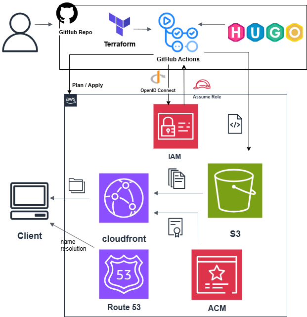

サイトの構成
本記事ではサイトの構成について記載しています。
使用サービス・構成
・Terraformを使って構築・管理を行っており、コンテンツ作成のSSGにHugoを使用しています。
・Github ActionsでCI/CDを構築しており、以下の２つのワークフローとなっています。
①featureブランチへのpushをトリガーにplanの自動実行し問題がなければPRを作成する。
②PRにコメントされたplan結果を確認し、mainブランチへマージすることでapplyを実行する。
・AWSサービスの基本構成としては、S3に配置したコンテンツをCloudfrontで配信しています。 独自ドメインゾーンをRoute53で管理し、ACMにて証明書を管理しTLS化させています。
